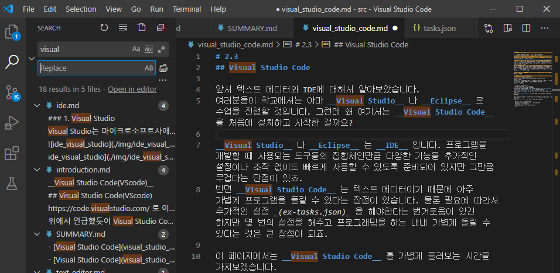
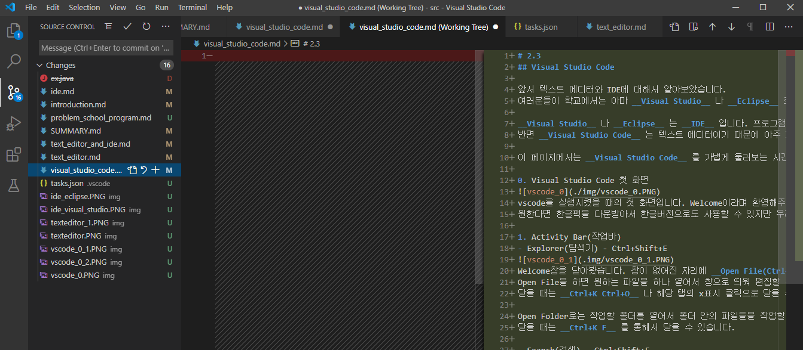

2.3
Visual Studio Code
앞서 텍스트 에디터와 IDE에 대해서 알아보았습니다.
여러분들이 학교에서는 아마 Visual Studio 나 Eclipse 로 수업을 진행할 것입니다. 그런데 왜 여기서는 Visual Studio Code 를 처음에 설치하고 시작한 걸까요?
Visual Studio 나 Eclipse 는 IDE 입니다. 프로그램을 개발할 때 사용되는 도구들의 집합체인만큼 다양한 기능을 추가적인 설정이나 조작 없이도 빠르게 사용할 수 있도록 준비되어 있지만 그만큼 무겁다는 단점이 있죠.
반면 Visual Studio Code 는 텍스트 에디터이기 때문에 아주 가볍게 프로그램을 돌릴 수 있다는 장점이 있습니다. 물론 필요에 따라서 추가적인 설정 (ex-tasks.json) 을 해야한다는 번거로움이 있긴 하지만 몇 번의 설정을 해주고 프로그래밍을 하는 내내 가볍게 돌릴 수 있다는 것은 큰 장점이 되죠.
이 페이지에서는 Visual Studio Code 를 가볍게 둘러보는 시간을 가져보겠습니다.
-
Visual Studio Code 첫 화면
 vscode를 실행시켰을 때의 첫 화면입니다. Welcome이라며 환영해주는군유.
vscode를 실행시켰을 때의 첫 화면입니다. Welcome이라며 환영해주는군유.
원한다면 한글팩을 다운받아서 한글버전으로도 사용할 수 있지만 우리는 앞으로 영어 사용에 익숙해지는 것이 좋기 때문에 이대로 진행해보겠습니다. -
Explorer(탐색기) - Ctrl+Shift+E

Welcome창을 닫아봤습니다. 창이 없어진 자리에 Open File(Ctrl+O) 와 Open Folder(Ctrl+K Ctrl+O) 가 눈에 띕니다.
Open File을 하면 원하는 파일을 하나 열어서 창으로 띄워 편집할 수 있습니다.
닫을 때는 Ctrl+K Ctrl+O 나 해당 탭의 x표시 클릭으로 닫을 수 있습니다.
Open Folder로는 작업할 폴더를 열어서 폴더 안의 파일들을 작업할 수 있습니다.
닫을 때는 Ctrl+K F 를 통해서 닫을 수 있습니다.
-
Search(검색) - Ctrl+Shift+F

전체 검색 기능입니다. 현재 열려있는 폴더 내의 모든 파일명, 파일 내의 내용까지 검색되는 것을 확인할 수 있습니다. -
Source Control(소스코드관리) - Ctrl+Shift+G  작성한 소스코드를 관리할 수 있습니다. 위의 사진을 보면 왼쪽 창은 비어있고, 오른쪽 창은 배경색이 초록색인 문장으로 가득한 것을 확인할 수 있는데요, 제가 비어있던 파일에 초록색만큼의 내용을 추가했다는 의미입니다. 소스코드관리는 Git으로 하는 습관을 가지는 것이 훨씬 좋기 때문에 사용법은 넘어가겠습니다.
-
Run(실행) - Ctrl+Shift+D 준비중
-
Extensions(확장관리) - Ctrl+Shift+X

확장 프로그램을 검색하여 설치할 수 있는 탭입니다. 원하는 extension(C, Java, Python 등)을 검색하고 필요한 것을 다운받아서 사용할 수 있습니다. -
Test 준비중
VScode를 간단하게 둘러보았습니다. 이걸로 VScode를 충분히 사용할 수 있는데요, 흔히들 많이 해보는 hello world를 한 번 출력해보겠습니다.
 BDY 폴더를 열고 빨간색 동그라미로 표시한 부분을 눌러서 hello.cpp 파일을 생성하고 작성했습니다.
BDY 폴더를 열고 빨간색 동그라미로 표시한 부분을 눌러서 hello.cpp 파일을 생성하고 작성했습니다.
위 코드를 Ctrl+S Ctrl+Shift+C 를 순서대로 눌러서 저장하고 실행하면 터미널에 hello world가 출력되는 것을 확인할 수 있습니다.